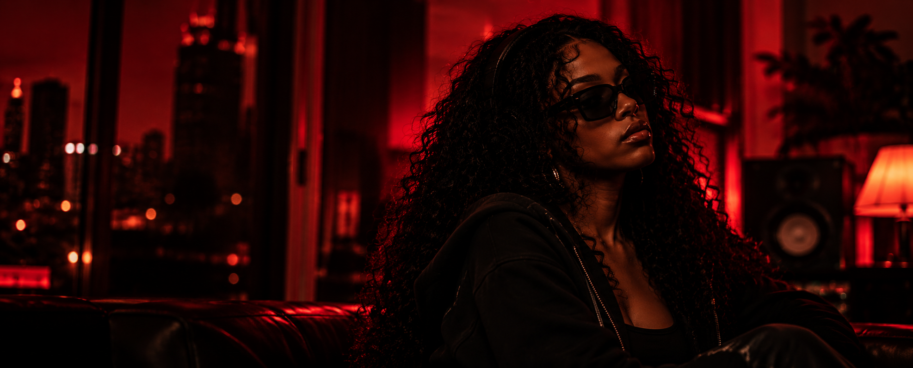

▶ OUR ARTISTS
ARIA
SOUL.
POWER.
TRUTH.

ARIA
— THE ARTIST
ARIA
Aria's voice is the heartbeat of UNISOGHN, bringing depth,
emotion, and authenticity to every track. Her vocals blend
effortless control with raw feeling, creating a sound that
lingers long after the music fades.
Aria draws inspiration from her personal journey, love,
and the power of self-discovery. She's not just a singer —
she's a storyteller, using her voice to turn pain into beauty
and experience into art.
As a key voice in UNISOGHN, Aria continues to create
music that connects with people and gives every story a
voice of its own.